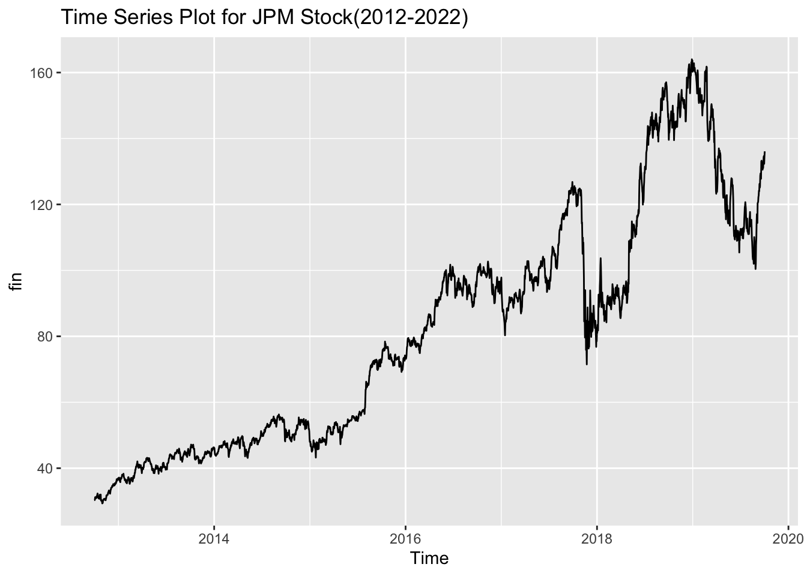
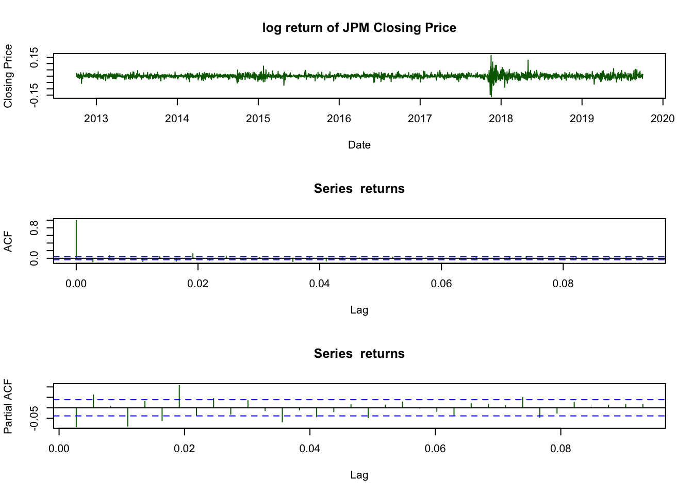
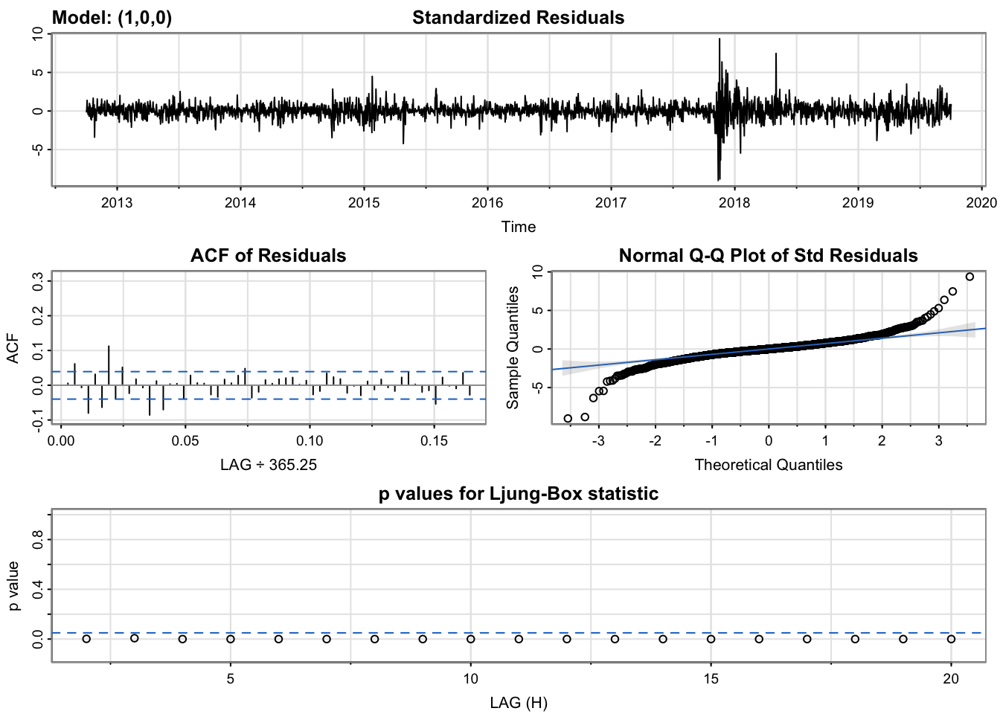
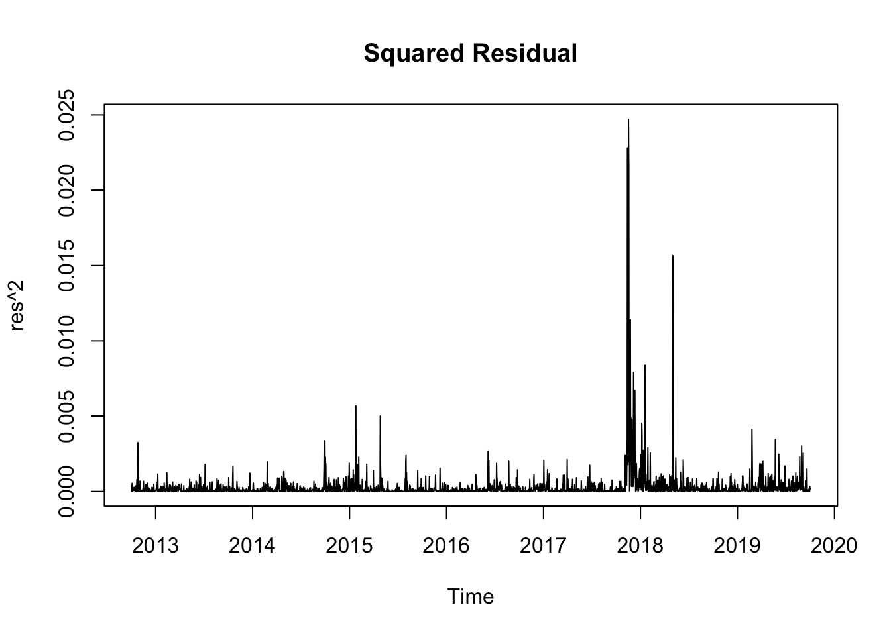
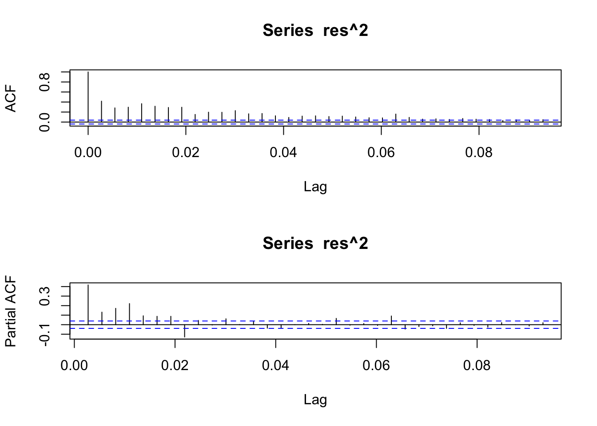

Financial Time Series Models
JPM.Open JPM.High JPM.Low JPM.Close JPM.Volume JPM.Adjusted
2022-11-22 134.00 135.27 133.69 135.04 9185700 133.0060
2022-11-23 134.94 136.50 134.86 136.48 7316200 134.4243
2022-11-25 136.48 137.14 136.06 136.74 3220500 134.6804
2022-11-28 136.07 136.71 134.19 134.35 9906900 132.3264
2022-11-29 134.66 136.64 134.41 136.56 7925300 134.5031
2022-11-30 136.09 138.18 133.19 138.18 14761200 136.0987
rownames.stock. date
2022-11-22 2022-11-22 2022-11-22
2022-11-23 2022-11-23 2022-11-23
2022-11-25 2022-11-25 2022-11-25
2022-11-28 2022-11-28 2022-11-28
2022-11-29 2022-11-29 2022-11-29
2022-11-30 2022-11-30 2022-11-30stock$date=as.factor(stock$date)
fin=ts(stock$JPM.Adjusted,
start = decimal_date(as.Date("2012-10-01")),
frequency = 365.25)
str(fin) Time-Series [1:2559] from 2013 to 2020: 30.4 30.3 30.5 31.2 31.1 ...autoplot(fin, main = "Time Series Plot for JPM Stock(2012-2022)")
log_jpm = log(fin)
returns = diff(log_jpm)
par(mfrow = c(3,1))
plot(returns , col = 'darkgreen',
main = 'log return of JPM Closing Price',
ylab='Closing Price', xlab='Date')
acf(returns, col ="darkgreen")
pacf(returns,col = "darkgreen")
adf.test(returns)Warning in adf.test(returns): p-value smaller than printed p-value
Augmented Dickey-Fuller Test
data: returns
Dickey-Fuller = -14.148, Lag order = 13, p-value = 0.01
alternative hypothesis: stationaryarima <- Arima(returns,order=c(1,0,0))
summary(arima) Series: returns
ARIMA(1,0,0) with non-zero mean
Coefficients:
ar1 mean
-0.0904 6e-04
s.e. 0.0197 3e-04
sigma^2 = 0.0002811: log likelihood = 6829.6
AIC=-13653.19 AICc=-13653.18 BIC=-13635.65
Training set error measures:
ME RMSE MAE MPE MAPE MASE ACF1
Training set -4.192503e-07 0.01675871 0.01127804 NaN Inf 0.6636603 0.005513299auto.arima(returns) #ARIMA(1,0,0)Series: returns
ARIMA(2,0,0) with non-zero mean
Coefficients:
ar1 ar2 mean
-0.0848 0.0614 6e-04
s.e. 0.0197 0.0197 3e-04
sigma^2 = 0.0002801: log likelihood = 6834.42
AIC=-13660.85 AICc=-13660.83 BIC=-13637.46sarima(returns,1,0,0)initial value -4.084540
iter 2 value -4.088644
iter 2 value -4.088644
iter 2 value -4.088644
final value -4.088644
converged
initial value -4.088835
iter 1 value -4.088835
final value -4.088835
converged
$fit
Call:
arima(x = xdata, order = c(p, d, q), seasonal = list(order = c(P, D, Q), period = S),
xreg = xmean, include.mean = FALSE, transform.pars = trans, fixed = fixed,
optim.control = list(trace = trc, REPORT = 1, reltol = tol))
Coefficients:
ar1 xmean
-0.0904 6e-04
s.e. 0.0197 3e-04
sigma^2 estimated as 0.0002809: log likelihood = 6829.6, aic = -13653.19
$degrees_of_freedom
[1] 2556
$ttable
Estimate SE t.value p.value
ar1 -0.0904 0.0197 -4.5902 0.0000
xmean 0.0006 0.0003 1.9263 0.0542
$AIC
[1] -5.337448
$AICc
[1] -5.337446
$BIC
[1] -5.330591res = arima$residuals
#ARCH test on residual
ArchTestRes <- as.character(ArchTest(res)$p.value)
names(ArchTestRes)<- "JPM"
ArchTestRes JPM
"1.41959421456039e-147" Because the p-value is less than 0.05, meaning that we need some other model to fit it since there is ARCH effect in the residuals for the ARMA model.
plot(res^2,main = "Squared Residual") 
par(mfrow=c(2,1))
acf(res^2) # q = 1
pacf(res^2) # p = 1，2
garch.fit1 <- garchFit(formula = ~arma(1,0) + garch(2,1), data = returns, trace=F)
summary(garch.fit1)
Title:
GARCH Modelling
Call:
garchFit(formula = ~arma(1, 0) + garch(2, 1), data = returns,
trace = F)
Mean and Variance Equation:
data ~ arma(1, 0) + garch(2, 1)
<environment: 0x1282f0cc0>
[data = returns]
Conditional Distribution:
norm
Coefficient(s):
mu ar1 omega alpha1 alpha2 beta1
9.7784e-04 -1.3565e-04 1.4293e-05 1.2765e-01 1.0000e-08 8.1168e-01
Std. Errors:
based on Hessian
Error Analysis:
Estimate Std. Error t value Pr(>|t|)
mu 9.778e-04 2.565e-04 3.813 0.000137 ***
ar1 -1.357e-04 2.196e-02 -0.006 0.995072
omega 1.429e-05 3.803e-06 3.759 0.000171 ***
alpha1 1.276e-01 2.319e-02 5.504 3.71e-08 ***
alpha2 1.000e-08 3.059e-02 0.000 1.000000
beta1 8.117e-01 3.659e-02 22.184 < 2e-16 ***
---
Signif. codes: 0 '***' 0.001 '**' 0.01 '*' 0.05 '.' 0.1 ' ' 1
Log Likelihood:
7258.392 normalized: 2.837526
Description:
Tue May 2 21:46:37 2023 by user:
Standardised Residuals Tests:
Statistic p-Value
Jarque-Bera Test R Chi^2 458.3749 0
Shapiro-Wilk Test R W 0.9815428 0
Ljung-Box Test R Q(10) 7.29919 0.6969298
Ljung-Box Test R Q(15) 20.77358 0.1442209
Ljung-Box Test R Q(20) 22.06077 0.3372222
Ljung-Box Test R^2 Q(10) 6.529811 0.7689622
Ljung-Box Test R^2 Q(15) 7.320393 0.9481416
Ljung-Box Test R^2 Q(20) 8.597777 0.9871151
LM Arch Test R TR^2 6.505286 0.8885033
Information Criterion Statistics:
AIC BIC SIC HQIC
-5.670361 -5.656646 -5.670372 -5.665388 garch.fit2 <- garchFit(formula = ~arma(1,0) + garch(1,1), data = returns, trace=F)
summary(garch.fit2)
Title:
GARCH Modelling
Call:
garchFit(formula = ~arma(1, 0) + garch(1, 1), data = returns,
trace = F)
Mean and Variance Equation:
data ~ arma(1, 0) + garch(1, 1)
<environment: 0x10e1e1648>
[data = returns]
Conditional Distribution:
norm
Coefficient(s):
mu ar1 omega alpha1 beta1
9.7890e-04 -1.0273e-04 1.4301e-05 1.2774e-01 8.1158e-01
Std. Errors:
based on Hessian
Error Analysis:
Estimate Std. Error t value Pr(>|t|)
mu 9.789e-04 2.565e-04 3.817 0.000135 ***
ar1 -1.027e-04 2.184e-02 -0.005 0.996248
omega 1.430e-05 3.101e-06 4.612 3.99e-06 ***
alpha1 1.277e-01 1.798e-02 7.106 1.19e-12 ***
beta1 8.116e-01 2.737e-02 29.648 < 2e-16 ***
---
Signif. codes: 0 '***' 0.001 '**' 0.01 '*' 0.05 '.' 0.1 ' ' 1
Log Likelihood:
7258.528 normalized: 2.837579
Description:
Tue May 2 21:46:37 2023 by user:
Standardised Residuals Tests:
Statistic p-Value
Jarque-Bera Test R Chi^2 457.6415 0
Shapiro-Wilk Test R W 0.9815651 0
Ljung-Box Test R Q(10) 7.289858 0.6978264
Ljung-Box Test R Q(15) 20.78758 0.1437547
Ljung-Box Test R Q(20) 22.0709 0.336676
Ljung-Box Test R^2 Q(10) 6.528706 0.7690621
Ljung-Box Test R^2 Q(15) 7.323315 0.9480492
Ljung-Box Test R^2 Q(20) 8.589662 0.9871911
LM Arch Test R TR^2 6.507591 0.8883681
Information Criterion Statistics:
AIC BIC SIC HQIC
-5.671250 -5.659821 -5.671257 -5.667105 Because the AIC and BIC of fit2 is lower than that of fit1, so we say the second model performs better, which is arma(1,0) + garch(1,1).
Summary
After analysis, we fitted an ARMA(1,0)+GARCH(1,1) model for the returns of JPM stock. According to Ljung-Box test, all p-value are greater than 0.05, meaning that there is no correlation left in the residuals so we can say that the model fitted well.
ϕ(B)x_t=δ+θ(B)y_t
ϕ(B)=1−0.003B
var(y_t|y_t−1) = σ^2 = 4.19×10^-5 + 0.16(y_{t−1})^2 + 0.74σ^2_{t_1}